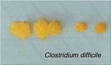

В последние несколько лет наблюдается увеличение частоты и тяжести заболеваний, вызываемых Clostridium difficile. Учёные выявили новый вирулентный штамм возбудителя, ставший причиной нескольких вспышек в Северной Америке и Европе.
В последние несколько лет наблюдается увеличение частоты и тяжести заболеваний, вызываемых Clostridium difficile. Учёные выявили новый вирулентный штамм возбудителя, ставший причиной нескольких вспышек в Северной Америке и Европе.

Данный штамм микроорганизма встречался и раньше, хотя и редко, а теперь он стал эпидемическим. Одно из первых сообщений о тяжёлой инфекции, вызванной C.difficile, в Питсбурге, было опубликовано в 2002 г. Начавшиеся исследования установили, что с 2000 по 2001 гг. отмечалось нарастание частоты инфекций, вызванных C.difficile, которое продолжалось и в 2003 г. Получены штаммы из 7 учреждений в 6 штатах США, в которых сообщалось о возможной вспышке. Позже микроорганизм был обнаружен уже в 15 штатах, то есть наблюдается его стремительное распространение.
В 2004 г. в США проведено наблюдательное исследование, в котором приняли участие инфекционисты по всей стране. Врачей просили сообщить о случаях инфекций, вызванных C.difficile, с которыми они столкнулись в последние 6 месяцев. В общей сложности, 210 респондентов сообщило о 3292 подобных случаях. Тридцать восемь процентов врачей-инфекционистов отметили увеличение частоты, а 39% — увеличение тяжести заболеваний, вызванных C.difficile.
Данный микроорганизм представляет проблему и в других странах, в частности, в Канаде, Великобритании и Нидерландах. В 2002 г. в больницах Монреаля и юга Квебека начались вспышки тяжёлых заболеваний, вызванных C.difficile, что вызвало предположение о том, что возбудитель обладает повышенной вирулентностью. Были собраны штаммы C.difficile в Канаде, США и Великобритании, и проведено их токсинотипирование, риботипирование с использованием ПЦР, изучение с помощью гель-электрофореза в пульсирующем поле, а также выявление гена двойного токсина и делеции в предполагаемом гене отрицательной регуляции продукции токсинов А и В (tcdC). Исследована in vitro продукция токсинов А и В эпидемическим штаммом и другими штаммами.
Штамм C.difficile с повышенной вирулентностью, NAP1/027, вызвал 67% случаев внутрибольничных и 37% случаев внебольничных инфекций. Штамм NAP1/027 способен вырабатывать в 16 раз больше токсина А и в 23 раза больше токсина В по сравнению с контрольным штаммом, а также штамм NAP1/027 продуцирует двойной токсин. Данный штамм имеет делецию в гене tcdC, вовлечённом в отрицательную регуляцию токсинообразования. Кроме перечисленных факторов вирулентности, штамм также характеризуется повышенной резистентностью к антимикробным препаратам, что даёт ему возможность распространяться в лечебных учреждениях.
Существует предположение, что вирулентный штамм может распространяться во внебольничных условиях среди людей, не обращающихся за медицинской помощью, хотя для подтверждения этого требуются дальнейшие исследования.
Целесообразно проводить в лечебных учреждениях мониторинг за инфекциями, вызываемыми C.difficile, путём учёта положительных результатов лабораторных исследований на C.difficile и тестов на токсинообразование. Для предотвращения и остановки потенциальных вспышек должны строго соблюдаться меры по инфекционному контролю.
Warny M., Pepin J., Fang A., e.a.
Toxin production by an emerging strain of Clostridium difficile associated with outbreaks of severe diseases in North America and Europe.
Lancet 2005; 366:1079-84.
Grassia T.
Insight into a virulent strain of C.difficile.
Infectious Diseases News 2005 Dec., p. 40-41.